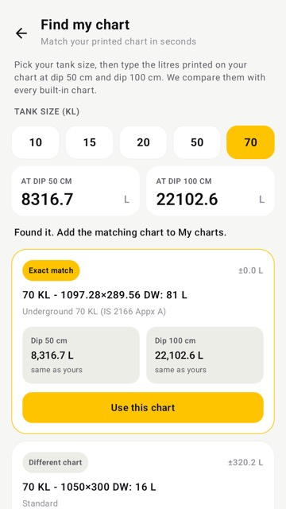

Wiz Dip Charts: tank dip chart calculator
Type the dip rod reading in centimetres and read the tank stock in litres from the dip chart of your underground tank. Built for petrol pump dealers, managers, DSMs and supervisors.
Get it on Google Play हिंदी में पढ़ें


What it does
- Dip to volume: dip in cm (decimals allowed) to litres from the chart.
- Volume to dip: enter litres and see the dip to expect, before and after a tanker decants.
- 19 built-in dip charts for 10, 15, 20, 50 and 70 KL horizontal tanks, including IS 2166 charts.
- Find my chart from the litres your paper chart shows at 50 cm and 100 cm.
- My charts: keep only your tanks and name them Petrol (MS), Diesel (HSD) or anything you like.
- % full and space left, so you know before you order or unload a tanker.
- Today's stock for every tank you dipped, with totals per product. Copy it or share it on WhatsApp.
- Works without internet. No account, no login.
Questions
How do I work out tank stock from a dip reading?
Pick your tank's chart, type the dip in centimetres (decimals such as 87.4 are fine) and the app shows the volume in litres from the dip chart, with % full and the space left.
Which tank sizes are included?
19 built-in dip charts for 10 KL, 15 KL, 20 KL, 50 KL and 70 KL horizontal tanks, including IS 2166 charts.
How do I know which dip chart is mine?
Open Find my chart and enter the litres your paper chart shows at 50 cm and 100 cm. The app finds the matching chart. Always check it against the approved calibration chart for your tank.
Does it work without internet?
Yes. All charts are stored in the app, and your dip readings and stock stay on your phone. No account and no login.
Is deadwood added or subtracted?
No. Volumes are read straight from the chart and interpolated between whole centimetres. Deadwood is shown as tank information only.
More from Wiz Labs
- Wiz Fuel Density: petrol and diesel density at 15°C.
- Wiz Mock GPS: mock location for app testing.